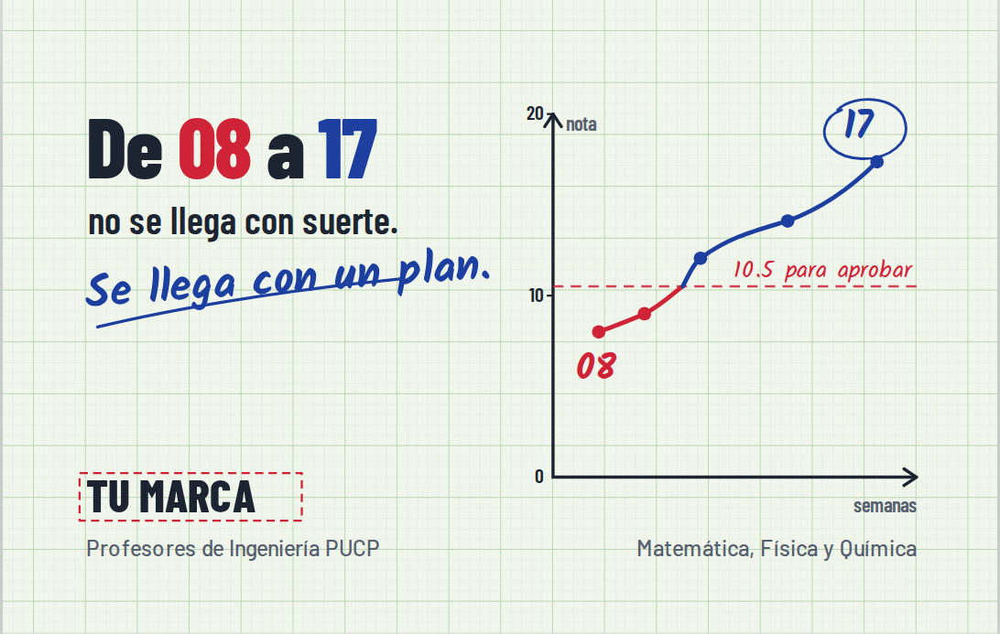
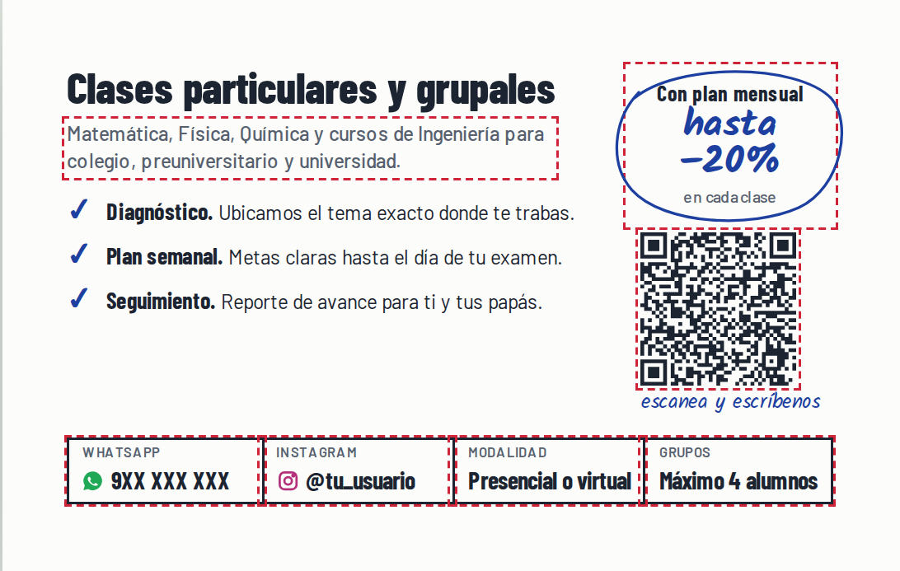
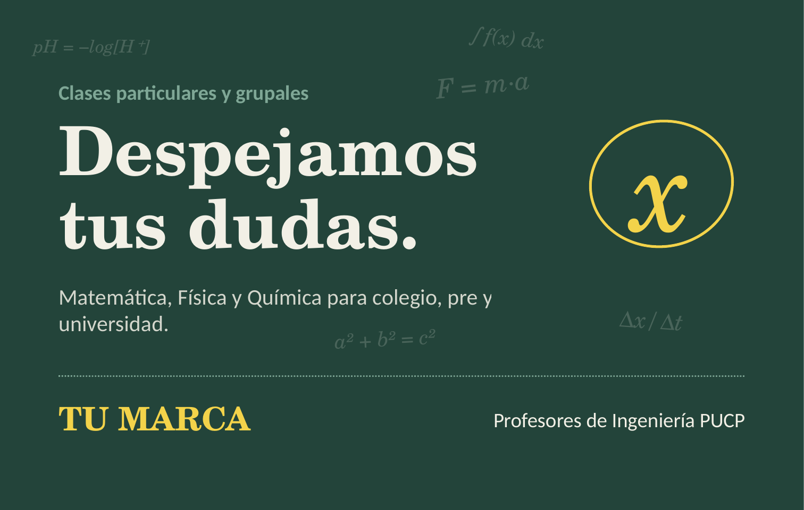
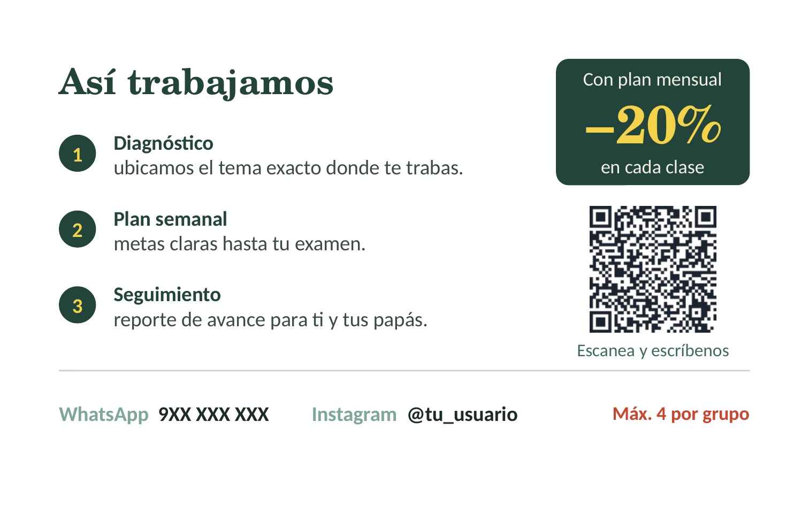

<title>Kit de marca Despeja</title>
<link rel="preconnect" href="https://fonts.googleapis.com">
<link rel="stylesheet" href="https://fonts.googleapis.com/css2?family=Barlow+Condensed:wght@600;700;800&family=Barlow:wght@400;500;600&family=Kalam:wght@700&display=swap">
<style>
  /* Layout: una sola columna de lectura (~68ch) con secciones numeradas solo donde hay secuencia real; las propuestas de tarjeta se muestran a ancho completo. */
  :root{
    --bg:#FFFFFF; --fg:#1B2430; --muted:#55616D; --line:#DDE5DF; --tint:#F1F6EC;
    --board:#23443A; --chalk:#F2F0E6; --yellow:#E9C531; --blue:#1C3FA0; --red:#CF2338;
    --display:'Barlow Condensed','Arial Narrow',sans-serif;
    --body:'Barlow','Helvetica Neue',Arial,sans-serif;
    --hand:'Kalam','Comic Sans MS',cursive;
  }
  @media (prefers-color-scheme: dark){:root:not([data-theme="light"]){
    --bg:#121A17; --fg:#E8ECE7; --muted:#A3AFA8; --line:#2A3832; --tint:#1A2621;
    --board:#2F5A4C; --chalk:#F2F0E6; --yellow:#F0D24E; --blue:#8FA8F2; --red:#F0727F; color-scheme:dark}}
  :root[data-theme="dark"]{
    --bg:#121A17; --fg:#E8ECE7; --muted:#A3AFA8; --line:#2A3832; --tint:#1A2621;
    --board:#2F5A4C; --chalk:#F2F0E6; --yellow:#F0D24E; --blue:#8FA8F2; --red:#F0727F; color-scheme:dark}
  *{box-sizing:border-box}
  body{background:var(--bg);color:var(--fg);font:400 1.0625rem/1.6 var(--body);margin:0;padding-inline:16px;padding-block:0 4rem}
  main{max-width:56rem;margin:0 auto}
  .read{max-width:42rem}
  h1,h2,h3{font-family:var(--display);line-height:1.05;text-wrap:balance;margin:0}
  h2{font-size:2rem;font-weight:800;margin-top:3.5rem}
  h3{font-size:1.3rem;font-weight:700}
  p{margin:.6rem 0}
  a{color:var(--blue)}
  .muted{color:var(--muted)}
  .hand{font-family:var(--hand);font-weight:700}

  header{background:var(--board);color:var(--chalk);margin-inline:-16px;padding:3.2rem 16px 2.6rem}
  header .in{max-width:56rem;margin:0 auto}
  header h1{font-size:clamp(2.6rem,7vw,4.4rem);font-weight:800}
  header h1 .x{color:var(--yellow);font-family:var(--hand);font-weight:700;display:inline-block;transform:rotate(-6deg)}
  header p{max-width:40rem;color:var(--chalk);opacity:.88;margin-top:.9rem}

  .names{display:grid;grid-template-columns:repeat(auto-fit,minmax(15rem,1fr));gap:1rem;margin-top:1.2rem}
  .name{border:1px solid var(--line);border-radius:6px;padding:1rem 1.1rem;display:flex;flex-direction:column;gap:.35rem;min-width:0}
  .name.pick{border-color:var(--board);background:var(--tint)}
  .name h3{font-size:1.7rem}
  .name .handle{font:600 .9rem var(--body);color:var(--muted)}
  .name p{margin:0;font-size:.97rem}
  .tag{align-self:flex-start;font:600 .75rem var(--body);letter-spacing:.06em;text-transform:uppercase;padding:.15rem .5rem;border-radius:3px;background:var(--board);color:var(--chalk)}
  .tag.alt{background:transparent;color:var(--muted);border:1px solid var(--line)}

  .pal{display:grid;grid-template-columns:repeat(auto-fit,minmax(9.5rem,1fr));gap:.8rem;margin-top:1rem}
  .sw{border:1px solid var(--line);border-radius:6px;overflow:hidden}
  .sw i{display:block;height:4.2rem}
  .sw div{padding:.5rem .7rem .6rem;font-size:.9rem;line-height:1.35}
  .sw b{display:block;font-family:var(--display);font-size:1.05rem}
  .sw code{font:500 .85rem ui-monospace,Menlo,monospace;color:var(--muted);user-select:all}

  .cards{display:grid;grid-template-columns:repeat(auto-fit,minmax(min(100%,24rem),1fr));gap:1.5rem;margin-top:1.2rem}
  .prop{display:flex;flex-direction:column;gap:.6rem;min-width:0}
  .prop .faces{display:grid;grid-template-columns:1fr 1fr;gap:.5rem}
  .prop img{width:100%;border-radius:3px;box-shadow:0 2px 10px rgba(0,0,0,.18);display:block}
  .prop h3 small{font:500 .9rem var(--body);color:var(--muted);margin-left:.4rem}
  .prop.pending{border:1.5px dashed var(--line);border-radius:6px;padding:1.2rem;justify-content:center}

  table{border-collapse:collapse;width:100%;font-size:.97rem}
  .tw{overflow-x:auto;margin-top:1rem}
  th,td{text-align:left;padding:.55rem .7rem;border-bottom:1px solid var(--line);vertical-align:top}
  th{font:700 1rem var(--display)}
  td.num{font-variant-numeric:tabular-nums;white-space:nowrap}

  ol.steps,ul.list{padding-left:1.2rem}
  ol.steps li,ul.list li{margin:.35rem 0}
  .note{border-left:3px solid var(--red);padding:.2rem 0 .2rem 1rem;margin:1.2rem 0}
  .grid2{display:grid;grid-template-columns:repeat(auto-fit,minmax(min(100%,18rem),1fr));gap:1.4rem;margin-top:1rem}
  .grid2 > div{min-width:0}
  .bio{background:var(--tint);border-radius:6px;padding:1rem 1.2rem;font-size:1rem;white-space:pre-line}
  :focus-visible{outline:2px solid var(--blue);outline-offset:2px}
</style>

<header><div class="in">
  <h1>Despe<span class="x">j</span>a</h1>
  <p>Kit de marca y marketing para las clases de Matemática, Física y Química con profesores de Ingeniería PUCP. Incluye nombres, colores, tarjetas, la oferta y el plan para conseguir los primeros alumnos.</p>
</div></header>

<main>
<section class="read">
  <h2>Nombres propuestos</h2>
  <p>Criterios: que se recuerde a la primera, que se entienda que son clases de ciencias, que nadie más lo use en tu zona y que el usuario de Instagram esté libre. Antes de decidir hay que revisar Instagram y la base de marcas de Indecopi. Esto no lo pude verificar desde aquí.</p>
</section>
<div class="names">
  <article class="name pick"><span class="tag">Recomendado</span><h3>Despeja</h3><span class="handle">@despeja.clases</span>
    <p>Viene de "despejar la x", lo primero que se aprende en álgebra, y también significa quitar dudas. Es un verbo: la marca dice lo que haces. Juega con el titular de la tarjeta B.</p></article>
  <article class="name"><span class="tag alt">Alternativa fuerte</span><h3>Método 20</h3><span class="handle">@metodo20</span>
    <p>El 20 es la nota máxima en Perú, así que cualquier padre lo entiende sin explicación. "Método" refuerza el plan estructurado. Nombra el resultado y el cómo a la vez.</p></article>
  <article class="name"><h3>Milimetrado</h3><span class="handle">@milimetrado.pe</span>
    <p>El papel de los informes de laboratorio. Suena a ingeniería y a precisión, y casa con la tarjeta A. Es más largo y más difícil de dictar por teléfono.</p></article>
  <article class="name"><h3>Ingenio</h3><span class="handle">@ingenio.clases</span>
    <p>Ingeniería más ingenio. Es fácil y positivo, pero bastante común: probablemente ya existan academias con ese nombre.</p></article>
  <article class="name"><h3>Delta</h3><span class="handle">@delta.clases</span>
    <p>Δ significa cambio, y eso es lo que vendes. Lo reconoce el alumno de pre y de universidad, menos el de colegio. Es un nombre muy usado en empresas.</p></article>
  <article class="name"><h3>Vector</h3><span class="handle">@vector.clases</span>
    <p>Un vector tiene dirección y magnitud: rumbo y empuje. Es técnico y corto, aunque no transmite tanta cercanía como Despeja.</p></article>
</div>

<section class="read">
  <h2>Colores de la empresa</h2>
  <p>Recomendación: <b>verde pizarra como color principal y amarillo tiza como acento</b>. El verde se asocia con el aula y con el crecimiento. Además, muchas academias usan azul o rojo, así que el verde las diferencia en una vitrina o un feed lleno de anuncios. El azul y el rojo quedan reservados para hablar de notas (desaprobado en rojo, aprobado en azul), un código que todo alumno peruano reconoce.</p>
</section>
<div class="pal">
  <div class="sw"><i style="background:#23443A"></i><div><b>Verde pizarra</b><code>#23443A</code><br>Principal: fondos, logo</div></div>
  <div class="sw"><i style="background:#F3D34A"></i><div><b>Amarillo tiza</b><code>#F3D34A</code><br>Acento: ofertas y llamadas a la acción</div></div>
  <div class="sw"><i style="background:#F2F0E6"></i><div><b>Tiza</b><code>#F2F0E6</code><br>Texto sobre verde</div></div>
  <div class="sw"><i style="background:#1C3FA0"></i><div><b>Lapicero azul</b><code>#1C3FA0</code><br>Notas aprobadas, avances</div></div>
  <div class="sw"><i style="background:#CF2338"></i><div><b>Nota roja</b><code>#CF2338</code><br>Solo para el "antes"</div></div>
  <div class="sw"><i style="background:#1B2430"></i><div><b>Grafito</b><code>#1B2430</code><br>Texto sobre fondo claro</div></div>
</div>
<p class="read muted">Tipografías: Barlow Condensed para titulares (recuerda a la rotulación de planos), Barlow para textos y Kalam para notas "a mano". Las tres son gratuitas en Google Fonts y existen en Canva.</p>

<section>
  <h2>Propuestas de tarjeta</h2>
  <p class="read">90 × 55 mm, con 3 mm de sangrado para imprenta. Lo que se ve como "TU MARCA", número y usuario son datos por completar.</p>
  <div class="cards">
    <div class="prop">
      <h3>A. Lámina de ingeniería <small>HTML/SVG → PDF vectorial</small></h3>
      <div class="faces"></div>
      <p>La más distinta. Cuenta una historia en dos segundos (de 08 a 17) y habla directo al padre preocupado. Sale en PDF vectorial listo para imprenta, pero editarla requiere tocar el código o pedírmelo.</p>
    </div>
    <div class="prop">
      <h3>B. Pizarra <small>PowerPoint editable</small></h3>
      <div class="faces"></div>
      <p>Más cálida y simple, y cualquiera del equipo la puede editar en PowerPoint. El juego de palabras funciona mejor si la marca se llama Despeja.</p>
    </div>
    <div class="prop pending">
      <h3>C. Canva <small>editable por todo el equipo</small></h3>
      <p>La tarjeta B ya está en tu Canva como "Tarjeta Pizarra – Clases", lista para editar: <a href="https://www.canva.com/d/5WqBX66E4LCopfX">abrir en Canva</a>. Además generé tres conceptos nuevos con el generador de Canva (examen corregido, fórmula y bloques de color) y busqué plantillas de tarjeta en Adobe Express.</p>
    </div>
  </div>
</section>

<section class="read">
  <h2>La oferta: el plan, sin clases gratis</h2>
  <p>Según el skill de ofertas, regalar o hacer descuentos sueltos atrae al cliente que solo busca precio. Funciona mejor premiar el compromiso: quien se queda con un plan paga menos por clase. Eso además encaja con lo que vendes, que es un método y no clases aisladas.</p>
</section>
<div class="tw read"><table>
  <thead><tr><th>Modalidad</th><th>Qué incluye</th><th>Precio por clase</th></tr></thead>
  <tbody>
    <tr><td>Clase suelta</td><td>Una sesión para resolver una duda puntual o preparar una práctica.</td><td class="num">S/ X (precio ancla)</td></tr>
    <tr><td><b>Plan mensual</b></td><td>8 clases, diagnóstico, plan semanal y reporte de avance a fin de mes.</td><td class="num">−15 %</td></tr>
    <tr><td><b>Plan ciclo</b></td><td>Todo el ciclo de colegio, pre o universidad, hasta el examen final o de admisión.</td><td class="num">−20 %</td></tr>
  </tbody>
</table></div>
<div class="read">
  <ul class="list">
    <li><b>Diagnóstico pagado pero descontable:</b> la primera clase se cobra y, si el alumno toma el plan, se descuenta del primer mes. Baja el riesgo sin regalar nada.</li>
    <li><b>Grupos de máximo 4:</b> es una escasez real y además es un argumento de calidad. Solo vale si de verdad lo cumplen.</li>
    <li><b>Ponerle nombre al plan</b> (por ejemplo "Plan Despeja") lo vuelve fácil de recomendar y permite cobrar más que por "clases".</li>
    <li><b>Referidos:</b> el alumno que trae a un amigo recibe 10 % en su siguiente mes, y el amigo también. Entrega 3 tarjetas a cada alumno inscrito.</li>
  </ul>
  <p class="note">Ajusta los porcentajes a sus costos. En la tarjeta solo aparece "hasta −20 %" porque es la cifra más alta que de verdad van a cumplir.</p>
</div>

<section class="read">
  <h2>Por qué la tarjeta no se ignora</h2>
  <p>Principios del skill de psicología del marketing y dónde se aplican:</p>
  <div class="tw"><table>
    <thead><tr><th>Principio</th><th>Dónde está en la tarjeta</th></tr></thead>
    <tbody>
      <tr><td>Aversión a la pérdida</td><td>El 08 en rojo activa el miedo a jalar el curso antes de que la persona piense si necesita un profesor.</td></tr>
      <tr><td>Efecto de cercanía a la meta</td><td>La curva que sube muestra que el avance es posible y visible semana a semana.</td></tr>
      <tr><td>Autoridad</td><td>"Profesores de Ingeniería PUCP" da credibilidad sin decir "somos los mejores".</td></tr>
      <tr><td>Anclaje</td><td>El precio de la clase suelta hace que el plan se sienta barato.</td></tr>
      <tr><td>Compromiso y coherencia</td><td>El que elige un plan se ve a sí mismo como alumno constante y cumple más.</td></tr>
      <tr><td>Menos fricción</td><td>El QR abre WhatsApp con el mensaje ya escrito: un toque y listo.</td></tr>
      <tr><td>Exposición repetida</td><td>La misma marca en la tarjeta, Instagram y los estados de WhatsApp. Se necesitan varios contactos antes de que alguien escriba.</td></tr>
    </tbody>
  </table></div>
</section>

<section class="read">
  <h2>Lo que falta de marketing</h2>
  <div class="grid2">
    <div>
      <h3>Instagram</h3>
      <p>Bio de ejemplo:</p>
      <div class="bio">Clases de Matemática, Física y Química
Colegio · Pre · Universidad
Profes de Ingeniería PUCP
Plan con diagnóstico y reporte de avance
👇 Escríbenos por WhatsApp</div>
      <p>Tres tipos de contenido que se alternan, 3 posts por semana más historias diarias:</p>
      <ul class="list">
        <li><b>Ejercicio en 60 segundos:</b> un problema típico de examen resuelto en reel.</li>
        <li><b>Antes y después:</b> la curva de notas de un alumno, con su permiso y sin nombre.</li>
        <li><b>Detrás del método:</b> quiénes son los profes, cómo es un diagnóstico, un reporte de avance.</li>
      </ul>
      <p>Historias destacadas: Cursos, Planes, Cómo trabajamos, Testimonios.</p>
    </div>
    <div>
      <h3>WhatsApp Business</h3>
      <ul class="list">
        <li>Mensaje de bienvenida que pregunta curso, grado y fecha del examen.</li>
        <li>Catálogo con los tres planes.</li>
        <li>Respuestas rápidas para precios, horarios y modalidad.</li>
        <li>Etiquetas por etapa: nuevo, diagnóstico agendado, plan activo, renovar.</li>
        <li>Un estado semanal con un tip o un ejercicio. Es gratis y lo ven todos tus contactos.</li>
      </ul>
      <h3 style="margin-top:1.4rem">Medir qué zona funciona</h3>
      <p>Imprime tandas de tarjetas con un QR distinto por zona. Cada uno abre WhatsApp con un mensaje como "Hola, vi su tarjeta (SM1)". Así sabes qué colegio, librería o barrio trae alumnos y dónde repartir más.</p>
    </div>
  </div>

  <h3 style="margin-top:2rem">Dónde repartir las tarjetas</h3>
  <ul class="list">
    <li>Librerías y fotocopiadoras cerca de colegios, sobre todo en semanas de exámenes.</li>
    <li>Grupos de padres del colegio y de Facebook del distrito (como foto de la tarjeta).</li>
    <li>Cada alumno inscrito recibe 3 tarjetas para el programa de referidos.</li>
    <li>Si dan clases presenciales: perfil de Google Maps (Google Business) para pedir reseñas.</li>
  </ul>

  <h2>Primeros 30 días</h2>
  <ol class="steps">
    <li>Elegir nombre y revisar que el usuario de Instagram y la marca estén libres.</li>
    <li>Elegir propuesta de tarjeta (A, B o C en Canva) y completar los datos.</li>
    <li>Fijar precios: clase suelta, plan mensual y plan ciclo.</li>
    <li>Abrir Instagram y WhatsApp Business con la bio, el catálogo y las respuestas rápidas.</li>
    <li>Publicar 6 posts antes de repartir tarjetas, para que el perfil no esté vacío cuando entren a verlo.</li>
    <li>Imprimir 500 tarjetas en 2 o 3 tandas con QR por zona y repartir.</li>
    <li>A fin de mes, contar mensajes por zona y repetir en las que funcionaron.</li>
  </ol>

  <h2>Cuidados legales</h2>
  <ul class="list">
    <li>No usar el logo, escudo ni colores de la PUCP: puede parecer un servicio oficial de la universidad. Decir "profesores de Ingeniería PUCP" sí es válido si es cierto.</li>
    <li>Evitar promesas como "aprobación garantizada". Indecopi puede considerarla publicidad engañosa si no la puedes probar.</li>
    <li>Si el nombre funciona, conviene registrarlo como marca en Indecopi. Revisa la tasa vigente en su web.</li>
    <li>Testimonios y notas de alumnos, solo con permiso escrito (de los padres si es menor de edad).</li>
  </ul>
</section>
</main>
